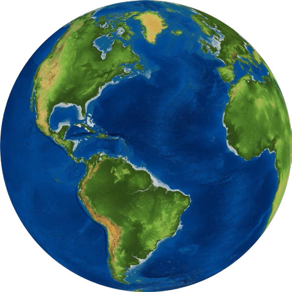

After Brexit, Britons considered escaping to Ireland , googling.
First, the United Kingdom misspelled “language” on an English-language test for migrants. Then, an Australian company made plans to connect Asia and Europe through a submarine fiber-optic cable that would cross the Arctic Circle. The plan was made on the condition that the Arctic keep melting, a result of global climate change that US presidential candidate Donald Trump would soon describe as “a Chinese invention.”
In February, ethnic Kurds opened a diplomatic office in Moscow, the first outside of Iraqi Kurdistan, and Google Translate started translating Kurmanji Kurdish. It also started translating ethnic minority languages Frisian, Corsican, Scottish Gaelic and Hawaiian. Meanwhile, China began forcing Muslim minorities to update their passports with DNA samples. France and Belgium, following a terrible terror attack committed by Muslim French and Belgian nationals, decided to share more biometric information. India began collecting the biometrics of Pakistani cricket fans entering the country for the World Twenty20, and Japan announced the deployment of facial recognition systems in airports nationwide.
In March, US president Obama flew to Cuba. Inspired, six different US airlines later announced flights to the island, [US?] cruise company Royal Caribbean added Havana to its $619 “Empress of the Seas” itinerary, and Google promised to install a data center. AT&T started offering Cubans roaming data services for two dollars per megabyte. (Fidel Castro would die six months later.) That same month, the Islamic State in Syria and the Levant was discovered to be invoicing and receiving fines in US dollars, despite previous claims to have broken free from the “satanic global economic system.”
After beating the United States and the European Union, pressured by industry group Unica, Brazil started fighting Thailand over sugar. India filed a complaint against the United States for doubling the fee and limiting the number of H-1B and L-1 work visas. And after being accused double-standards on trade, the United States decided to apply the “dolphin-safe” rule to tuna coming from the entire world, not just from Mexico.
In April, Europe discussed taking away American and Canadian travelers’ special visa privileges, and London mayor Boris Johnson (who was about to become foreign secretary) was given a prize for his poem about sex between Turkish president Recep Tayyip Erdogan and a goat. Egypt tried and failed to give two islands to Saudi Arabia. The next month, five Solomon Islands disappeared under the rising sea.
By June, Bolivia, Ethiopia, Sweden and Kazakhstan had taken seats on the United Nations’ Security Council. South Sudan had already joined the East African Community; Liberia and Afghanistan the World Trade Organization; and Nauru the World Bank. But then the Maldives left the Commonwealth, and Australia left the World Tourism Organization, Spanish Basque Country symbolically voted for separation, and US presidential candidate Donald Trump announced his dream of building a 3,201-km long wall with Mexico.
The United Kingdom voted to leave the European Union [BORIS GIF]. Italian prime minister Matteo Renzi offered EU passports to British students. Every team in that month’s Eurocup turned out to have players with dual nationality, except for Iceland and Ukraine.
In July, the African Union launched a visa-free regional passport. At the Olympics in Rio de Janeiro, 20 Kenyan athletes played for countries other than Kenya, 10 refugees played under the Olympic flag and 23 of 39 Qatari athletes turned out to have been born outside Qatar. While playing a vigorous session of Pokémon Go, two Canadian teenagers accidentally crossed the US border illegally. In Venezuela, where falling oil prices emptied out the country’s coffers, 500 women broke through a cordon of security guards, raced across the border into Colombia and stormed into supermarkets to purchase oil, corn flour and toilet paper.
Later that summer, Philippine president Rodrigo Duterte threatened to leave the United Nations and create a supra-national organization with China. International emoji authority Unicode added a [United Nations flag]. Samsung introduced [Palestine flag], [Kosovo flag] and [Western Sahara flag] in a package of 257 flag emojis. Spain got [paella] and France got [croissant], the Catalans petitioned for [porrón].
Service providers remained split on the unofficial flag of French island Réunion: Apple sided with [Apple style], proposed by the Vexillological Association of Réunion, while Samsung sided with [Samsung style], proposed by the Association for the Réunion Flag.
In September, the world’s nomads convened in Kyrgyzstan for the World Nomad Games. France opened a refugee camp in Paris, only to have it destroyed. The northern half of Cyprus decided to keep time with Turkey, while the island’s southern half followed Greece and moved its clocks backward one hour to UTC+2. Then the yuan joined the American dollar, the euro, the British pound and the yen in International Monetary Fund’s list of reserve currencies that can be used in loan, and Zimbabwean economists suggested adopting bitcoin as the national currency—in addition to the 9 foreign currencies already being used to buy and sell.
Following in the steps of Burundi and South Africa, Gambia withdrew from the International Criminal Court (ICC) in October, calling the body in its resignation letter [or whatever] the “International Caucasian Court.” In November, the ICC called Russia’s annexation of Crimea an occupation and Russia immediately withdrew its membership.
On the bright side, Colombia and the rebels signed a peace agreement, raising the hopes of 7 million internally-displaced Colombians that they might return home, and Belgium and the Netherlands peacefully traded 35 acres of Belgian land for 7 acres of Dutch land.
That month, Mos Def was arrested while leaving South Africa with a World passport, Mexico expanded deportation-defense services in consulates across the United States, and new border controls were installed around France, in the Belgium-German border and around Austria, Germany, Denmark, Sweden and Norway. Space nation Asgardia, and Danube micro-nation Liberland both claimed to have reached the mark of 500,000 citizens.
In December, the fake American embassy operating in Ghana finally closed. Europe’s ethnic minorities convened in South Tyrol, while WTO members met in Geneva to discuss scrapping tariffs on environment-related products—but didn’t, for fear of a flood of Chinese bikes. China confiscated one of America’s drones in the South China Sea, and then-president-elect Trump told Beijing to keep it.
By the end of the year, entries added to the Oxford English Dictionary last year included “Brexit” and “Grexit”, “Yazidism,” “Scandi,” “micronation,” “Afrofuturism,” "Bruges Group," “legal immigrant,” “Central African,” “K-pop,” “arms-racing” and “anxiety attack.” More than 180,000 people [is this total for the year? Or in a certain period?] had crossed from Northern Africa to Italy, and 50 million Georgians and Ukrainians had been granted the right to travel through Europe visa-free. Fifty-thousand green cards were awarded by the United States’ annual citizenship lottery in 2016, but 1 in 113 people in the world were still estimated to be displaced from their homes. It was the highest number since measurements started after the Second World War, when Europeans were the refugees.
On December 31, Cypriots celebrated New Year on the North, then crossed the border and celebrated it again on the south. And as if the year wasn’t already long enough, everyone had to live it for one extra second.
About
Curabitur viverra tristique mi vitae sodales. Nulla interdum ac ipsum eubibendum. Quisque sit amet elit id ante vestibulum rutrum in id dolor. Curabitur viverra tristique mi vitae sodales. Nulla interdum ac ipsum eubibendum. Quisque sit amet elit id ante vestibulum rutrum in id dolor. Curabitur viverra tristique mi vitae sodales.
Nulla interdum ac ipsum eubibendum. Quisque sit amet elit id ante vestibulum rutrum in id dolor.